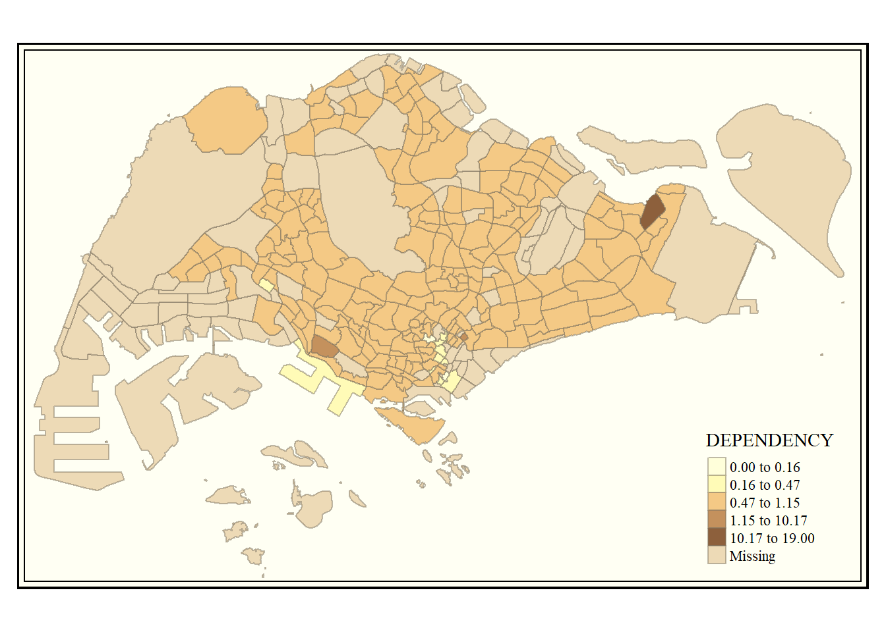

pacman::p_load(sf, tmap, tidyverse)Hands-on Exercise2 - Choropleth Mapping with R
Overview
In this hands on exercise, I learnt how to use the tmap package in R
Firstly, we load the required packages in R
2.3 Importing & preparing the data
Loading the Master Plan 2014 Subzone Boundary
mpsz = st_read(dsn="data/geospatial", layer="MP14_SUBZONE_WEB_PL")Reading layer `MP14_SUBZONE_WEB_PL' from data source
`D:\Allanckw\ISSS624\Hands-on_Ex2\data\geospatial' using driver `ESRI Shapefile'
Simple feature collection with 323 features and 15 fields
Geometry type: MULTIPOLYGON
Dimension: XY
Bounding box: xmin: 2667.538 ymin: 15748.72 xmax: 56396.44 ymax: 50256.33
Projected CRS: SVY21mpszSimple feature collection with 323 features and 15 fields
Geometry type: MULTIPOLYGON
Dimension: XY
Bounding box: xmin: 2667.538 ymin: 15748.72 xmax: 56396.44 ymax: 50256.33
Projected CRS: SVY21
First 10 features:
OBJECTID SUBZONE_NO SUBZONE_N SUBZONE_C CA_IND PLN_AREA_N
1 1 1 MARINA SOUTH MSSZ01 Y MARINA SOUTH
2 2 1 PEARL'S HILL OTSZ01 Y OUTRAM
3 3 3 BOAT QUAY SRSZ03 Y SINGAPORE RIVER
4 4 8 HENDERSON HILL BMSZ08 N BUKIT MERAH
5 5 3 REDHILL BMSZ03 N BUKIT MERAH
6 6 7 ALEXANDRA HILL BMSZ07 N BUKIT MERAH
7 7 9 BUKIT HO SWEE BMSZ09 N BUKIT MERAH
8 8 2 CLARKE QUAY SRSZ02 Y SINGAPORE RIVER
9 9 13 PASIR PANJANG 1 QTSZ13 N QUEENSTOWN
10 10 7 QUEENSWAY QTSZ07 N QUEENSTOWN
PLN_AREA_C REGION_N REGION_C INC_CRC FMEL_UPD_D X_ADDR
1 MS CENTRAL REGION CR 5ED7EB253F99252E 2014-12-05 31595.84
2 OT CENTRAL REGION CR 8C7149B9EB32EEFC 2014-12-05 28679.06
3 SR CENTRAL REGION CR C35FEFF02B13E0E5 2014-12-05 29654.96
4 BM CENTRAL REGION CR 3775D82C5DDBEFBD 2014-12-05 26782.83
5 BM CENTRAL REGION CR 85D9ABEF0A40678F 2014-12-05 26201.96
6 BM CENTRAL REGION CR 9D286521EF5E3B59 2014-12-05 25358.82
7 BM CENTRAL REGION CR 7839A8577144EFE2 2014-12-05 27680.06
8 SR CENTRAL REGION CR 48661DC0FBA09F7A 2014-12-05 29253.21
9 QT CENTRAL REGION CR 1F721290C421BFAB 2014-12-05 22077.34
10 QT CENTRAL REGION CR 3580D2AFFBEE914C 2014-12-05 24168.31
Y_ADDR SHAPE_Leng SHAPE_Area geometry
1 29220.19 5267.381 1630379.3 MULTIPOLYGON (((31495.56 30...
2 29782.05 3506.107 559816.2 MULTIPOLYGON (((29092.28 30...
3 29974.66 1740.926 160807.5 MULTIPOLYGON (((29932.33 29...
4 29933.77 3313.625 595428.9 MULTIPOLYGON (((27131.28 30...
5 30005.70 2825.594 387429.4 MULTIPOLYGON (((26451.03 30...
6 29991.38 4428.913 1030378.8 MULTIPOLYGON (((25899.7 297...
7 30230.86 3275.312 551732.0 MULTIPOLYGON (((27746.95 30...
8 30222.86 2208.619 290184.7 MULTIPOLYGON (((29351.26 29...
9 29893.78 6571.323 1084792.3 MULTIPOLYGON (((20996.49 30...
10 30104.18 3454.239 631644.3 MULTIPOLYGON (((24472.11 29...Loading the Singapore Residents by Planning Area / Subzone, Age Group, Sex and Type of Dwelling dataset
popData = read_csv("data/aspatial/respopagesextod2011to2020.csv")Rows: 984656 Columns: 7
── Column specification ────────────────────────────────────────────────────────
Delimiter: ","
chr (5): PA, SZ, AG, Sex, TOD
dbl (2): Pop, Time
ℹ Use `spec()` to retrieve the full column specification for this data.
ℹ Specify the column types or set `show_col_types = FALSE` to quiet this message.- Create a data table to break the population data into the following categories:
YOUNG: age group 0 to 4 until age group 20 to 24,
ECONOMY ACTIVE: age group 25-29 until age group 60-64,
AGED: age group 65 and above,
TOTAL: all age group, and
DEPENDENCY: the ratio between young and aged against economy active group
popdata2020 = popData %>%
filter(Time == 2020) %>%
group_by(PA, SZ, AG) %>%
summarise(`POP` = sum(`Pop`)) %>%
ungroup()%>%
pivot_wider(names_from=AG,
values_from=POP) %>%
mutate(YOUNG = rowSums(.[3:6])
+rowSums(.[12])) %>%
mutate(`ECONOMY ACTIVE` = rowSums(.[7:11])+
rowSums(.[13:15]))%>%
mutate(`AGED`=rowSums(.[16:21])) %>%
mutate(`TOTAL`=rowSums(.[3:21])) %>%
mutate(`DEPENDENCY` = (`YOUNG` + `AGED`) /`ECONOMY ACTIVE`) %>%
select(`PA`, `SZ`, `YOUNG`,
`ECONOMY ACTIVE`, `AGED`,
`TOTAL`, `DEPENDENCY`)`summarise()` has grouped output by 'PA', 'SZ'. You can override using the
`.groups` argument.Joining attribute data & geospatial data
Before joining, we need to convert the PA and SZ fields to upper case. This is because the values of PA and SZ fields are made up of upper- and lowercase. On the other, hand the SUBZONE_N and PLN_AREA_N are in uppercase.
We only want Economy Active citizen in our analysis.
popdata2020 = popdata2020 %>%
mutate_at(.vars = vars(PA, SZ), .funs = funs(toupper)) %>%
filter('ECONOMY ACTIVE' > 0)Warning: `funs()` was deprecated in dplyr 0.8.0.
ℹ Please use a list of either functions or lambdas:
# Simple named list: list(mean = mean, median = median)
# Auto named with `tibble::lst()`: tibble::lst(mean, median)
# Using lambdas list(~ mean(., trim = .2), ~ median(., na.rm = TRUE))Next, left_join() of dplyr is used to join the geographical data and attribute table using planning subzone name e.g. SUBZONE_N and SZ as the common identifier.
mpsz_pop2020 = left_join(mpsz, popdata2020, by = c("SUBZONE_N" = "SZ"))left_join() of dplyr package is used with mpsz simple feature data frame as the left data table is to ensure that the output will be a simple features data frame.
2.4 Choropleth Mapping Geospatial Data Using tmap
Plotting a choropleth map quickly using Quick Thematic map Plot - qtm()
tmap_mode() with “plot” option is used to produce a static map. For interactive mode, “view” option should be used.
fill argument is used to map the attribute (i.e. DEPENDENCY)
tmap_mode("plot")tmap mode set to plottingqtm(mpsz_pop2020,
fill = "DEPENDENCY")
Using tmap
The drawback of qtm() is that it is difficult to manage the appearance of individual levels. Drawing elements of tmap should be utilized to create a cartographic choropleth map as displayed below
In tmap, several legend options are provided to change the placement, format and appearance of the legend using the tm_layout method
Beside map style, tmap also also provides arguments to draw other map furniture such as compass, scale bar and grid lines.
In the code chunk below, tm_compass(), tm_scale_bar() and tm_grid() are used to add compass, scale bar and grid lines onto the choropleth map. They are known as Cartographic Furniture
tmap allows a wide variety of layout settings to be changed. They can be called by using tmap_style().
tm_shape(mpsz_pop2020) +
tm_fill("DEPENDENCY",
style = "quantile",
palette ="Reds",
title="DEPENDENCY RATIO") +
tm_layout(main.title="Distribution of Dependency ratio by planning subzone",
main.title.position="center",
main.title.size=1.2,
legend.height = 0.35,
legend.width = 0.35,
frame = TRUE) +
tm_borders(alpha=0.5) +
tm_compass(type="8star", size=2) +
tm_scale_bar() +
tm_grid (alpha=0.2) +
tmap_style("classic") +
tm_credits("Source: Planning Sub-zone boundary from Urban Redevelopment Authorithy (URA)\n and Population data from Department of Statistics DOS",
position = c("left", "bottom")
)tmap style set to "classic"other available styles are: "white", "gray", "natural", "cobalt", "col_blind", "albatross", "beaver", "bw", "watercolor" Base Map
The basic building block of tmap is tm_shape() followed by one or more layer elemments such as tm_fill() and tm_polygons().
tm_shape(mpsz_pop2020) +
tm_polygons()Drawing a choropleth map using tm_polygons()
To draw a choropleth map showing the geographical distribution of a selected variable by planning subzone, we just need to assign the target variable such as Dependency to tm_polygons().
tm_shape(mpsz_pop2020)+
tm_polygons("DEPENDENCY")The default interval binning used to draw the choropleth map is called “pretty”. A detailed discussion of the data classification methods supported by tmap will be provided in sub-section 4.3.
The default colour scheme used is
YlOrRdof ColorBrewer.By default, Missing value will be shaded in grey.
Drawing a choropleth map using tm_fill() and tm_border()
tm_polygons() is a wraper of tm_fill() and tm_border(). tm_fill() shades the polygons by using the default colour scheme and tm_borders() adds the borders of the shapefile onto the choropleth map.
tm_shape(mpsz_pop2020)+
tm_fill("DEPENDENCY")The above shows the map drawn by using tm_fill() alone Various dependencies are accounted for when distributing the planning subzones.
The planning subzone boundaries will be added using tm_borders().
tm_shape(mpsz_pop2020)+
tm_fill("DEPENDENCY") +
tm_borders(lwd = 0.1, alpha = 1)The alpha parameter is used to define transparency number between 0 (totally transparent) and 1 (not transparent). By default, the alpha value of the col is used (normally 1).
Beside alpha parameter, there are three other parameters for tm_borders(), they are:
col = border colour,
lwd = border line width. The default is 1, and
lty = border line type. The default is “solid”.
Data Classification Methods of tmap
Most choropleth maps employ some methods of data classification. The point of classification is to take a large number of observations and group them into data ranges or classes. The breaks factor determines how a continuous variable is broken down into its respective categories
Varying Style
tmap provides a total ten data classification methods, namely (Nowosad, 2019):
fixed, we need breaks for fixed value
In conjunction with the breaks argument, the “fixed” style permits manual choosing of the breaks.
summary(mpsz_pop2020$DEPENDENCY)Min. 1st Qu. Median Mean 3rd Qu. Max. NA's 0.0000 0.6519 0.7025 0.7742 0.7645 19.0000 92We could use the quantile values to define breaks in fixed style
tm_shape(mpsz_pop2020)+ tm_fill("DEPENDENCY", n = 5, breaks = c(0, 0.60, 0.70, 0.76, 0.90, 1.00), style = "fixed") + tm_borders(alpha = 0.5)Warning: Values have found that are higher than the highest breaksd
The sd style determines a variable’s standard deviation and uses that number as the break width.
tm_shape(mpsz_pop2020)+ tm_fill("DEPENDENCY", n = 5, style = "sd") + tm_borders(alpha = 0.5)equal
The equal style is suitable for variables with a uniform distribution and separates input values into bins of equal range. It is not advised for variables with a skewed distribution since the generated map can have a limited range of colors.
tm_shape(mpsz_pop2020)+ tm_fill("DEPENDENCY", n = 5, style = "equal") + tm_borders(alpha = 0.5)pretty (default) This style rounds breaks into whole numbers where possible and spaces them evenly.
tm_shape(mpsz_pop2020)+ tm_fill("DEPENDENCY", n = 5, style = "pretty") + tm_borders(alpha = 0.5)quantile
Breaks are produced by the quantile style using an equal number of features.
tm_shape(mpsz_pop2020)+ tm_fill("DEPENDENCY", n = 5, style = "quantile") + tm_borders(alpha = 0.5)kmeans
The breaks in the kmeans style are produced using the kmeans function.
tm_shape(mpsz_pop2020)+ tm_fill("DEPENDENCY", n = 5, style = "quantile") + tm_borders(alpha = 0.5)
hclust
Breaks are made using hierarchical clustering in the hclust style.
tm_shape(mpsz_pop2020)+ tm_fill("DEPENDENCY", n = 5, style = "hclust") + tm_borders(alpha = 0.5)bclust
The breaks in the bclust style are produced using bagged clustering
tm_shape(mpsz_pop2020)+ tm_fill("DEPENDENCY", n = 5, style = "bclust") + tm_borders(alpha = 0.5)
Committee Member: 1(1) 2(1) 3(1) 4(1) 5(1) 6(1) 7(1) 8(1) 9(1) 10(1) Computing Hierarchical Clusteringfisher
The fisher style produces groups that are as homogeneous as possible.
tm_shape(mpsz_pop2020)+ tm_fill("DEPENDENCY", n = 5, style = "fisher") + tm_borders(alpha = 0.5)jenks
The jenks style of data analysis locates clusters of related values and emphasizes the distinctions between categories.
tm_shape(mpsz_pop2020)+ tm_fill("DEPENDENCY", n = 5, style = "jenks") + tm_borders(alpha = 0.5)
Varying n & palette
n defines the preferred number of classes, if we were to enter a lower number, there will be less shades (or categories) vs a higher number will produce more shades (or categories)
Using the jenkers example, we can see using n = 3 produces only three shades, while n = 10 produces ten shades
We can also change the colour schemes using the palette parameter, to reverse the colour shading, add a “-” prefix.
tm_shape(mpsz_pop2020)+
tm_fill("DEPENDENCY",
n = 3, palette = "Greens",
style = "jenks") +
tm_borders(alpha = 0.5)tm_shape(mpsz_pop2020)+
tm_fill("DEPENDENCY",
n = 10, palette = "-Blues",
style = "jenks") +
tm_borders(alpha = 0.5)Drawing Small Multiple Choropleth Maps
Small multiple maps, also referred to as facet maps, are composed of many maps arrange side-by-side, and sometimes stacked vertically. Small multiple maps enable the visualization of how spatial relationships change with respect to another variable, such as time.
In tmap, small multiple maps can be plotted in 3 ways:
by assigning multiple values to at least one of the asthetic arguments,
In this example, small multiple choropleth maps are created by defining ncols (Young and Aged) in tm_fill()
tm_shape(mpsz_pop2020)+ tm_fill(c("YOUNG", "AGED"), style = "equal", palette = "Blues") + tm_layout(legend.position = c("right", "bottom")) + tm_borders(alpha = 0.5) + tmap_style("white")tmap style set to "white"other available styles are: "gray", "natural", "cobalt", "col_blind", "albatross", "beaver", "bw", "classic", "watercolor"In this example, small multiple choropleth maps are created by assigning multiple values to at least one of the aesthetic arguments (Style & palette
tm_shape(mpsz_pop2020)+ tm_polygons(c("DEPENDENCY","AGED"), style = c("equal", "quantile"), palette = list("Blues","Greens")) + tm_layout(legend.position = c("right", "bottom"))by defining a group-by variable in
tm_facets(),In this example, multiple small choropleth maps are created by using
tm_facets().This function specifies the facets, such as the number of rows and columns, the coordinate system, and whether the scales are fixed or free (i.e. independent of each other). (R Documentation, n,d)
tm_shape(mpsz_pop2020) + tm_fill("DEPENDENCY", style = "quantile", palette = "Reds", thres.poly = 0) + tm_facets(by="REGION_N", free.coords=TRUE, drop.shapes=TRUE) + tm_layout(legend.show = FALSE, title.position = c("center", "center"), title.size = 20) + tm_borders(alpha = 0.5)Warning: The argument drop.shapes has been renamed to drop.units, and is therefore deprecatedby creating multiple stand-alone maps with tmap_arrange().
In this example, multiple small choropleth maps (youngmap & agedmap) are created by creating multiple stand-alone maps with tmap_arrange().
This function can be used to arrange custom small multiples in a grid layout. (R Documentation, n,d)
youngmap <- tm_shape(mpsz_pop2020)+ tm_polygons("YOUNG", style = "quantile", palette = "Blues") agedmap <- tm_shape(mpsz_pop2020)+ tm_polygons("AGED", style = "quantile", palette = "Blues") tmap_arrange(youngmap, agedmap, asp=1, ncol=2)
Mapping Spatial Object Meeting a Selection Criterion
Instead of creating small multiple choropleth map, the selection function can be used to map spatial objects meeting the selection criterion.
In this example, we specify that we only want the Central Region in the mpsz_pop2020 dataset
tm_shape(mpsz_pop2020[mpsz_pop2020$REGION_N=="CENTRAL REGION", ])+
tm_fill("DEPENDENCY",
style = "quantile",
palette = "Reds",
legend.hist = TRUE,
legend.is.portrait = TRUE,
legend.hist.z = 0.1) +
tm_layout(legend.outside = TRUE,
legend.height = 0.45,
legend.width = 5.0,
legend.position = c("right", "bottom"),
frame = FALSE) +
tm_borders(alpha = 0.5)Warning in pre_process_gt(x, interactive = interactive, orig_crs =
gm$shape.orig_crs): legend.width controls the width of the legend within a map.
Please use legend.outside.size to control the width of the outside legendReference
J. Nowosad (2019), Map coloring: the color scale styles available in the tmap package https://geocompr.github.io/post/2019/tmap-color-scales/
R Documentation (n.d), tmap_arrange: Arrange small multiples in grid layout https://www.rdocumentation.org/packages/tmap/versions/3.3-3/topics/tmap_arrange
R Documentation (n.d), tm_facets: Small multiples https://www.rdocumentation.org/packages/tmap/versions/3.3-3/topics/tm_facets